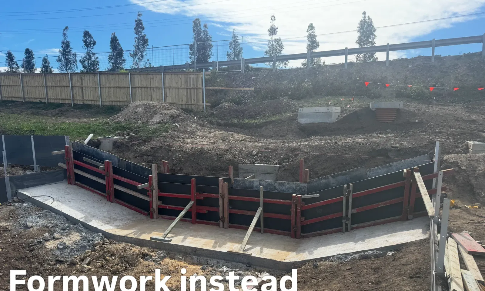
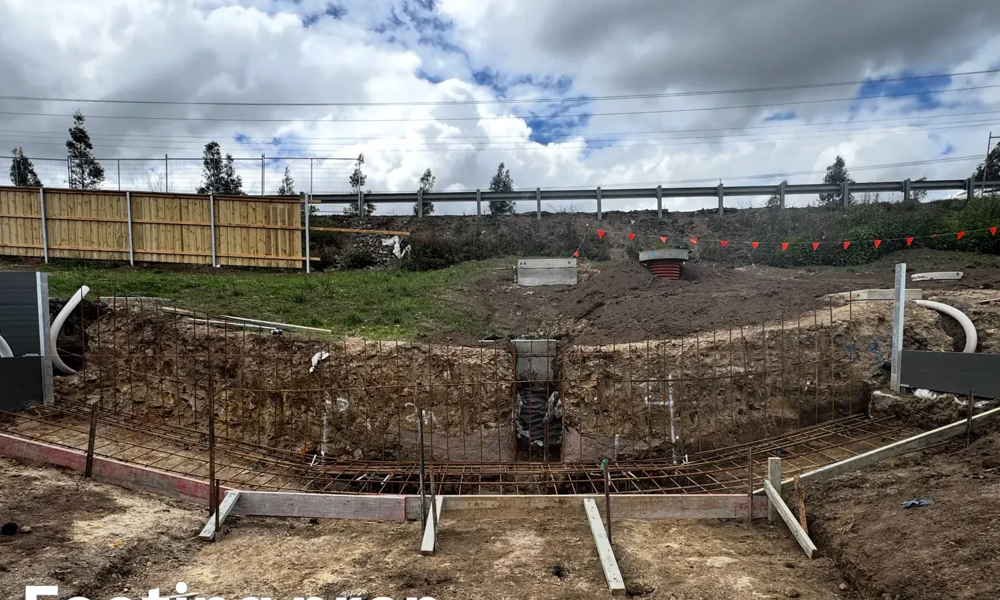
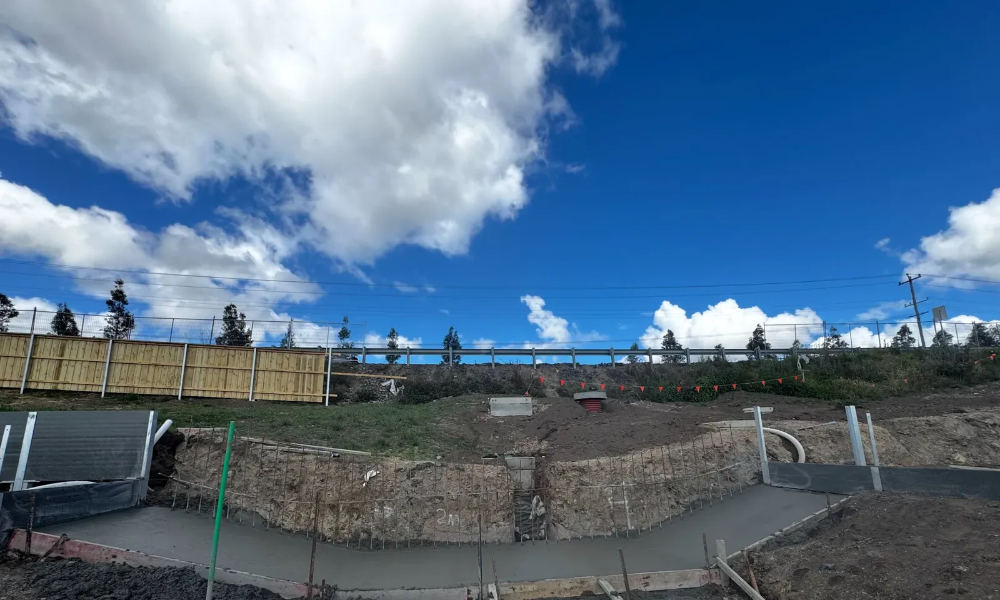

Driveways & entrances
Exposed or plain concrete driveways built for the way you arrive home — from a single car pad to a full curved entrance.
 NEWY CRETE.
Talk to us 0436 486 214 ↗
NEWY CRETE.
Talk to us 0436 486 214 ↗
CONCRETING & EARTHMOVING · NEWCASTLE
Driveways, pathways, slabs and site works.
One crew from first cut to final finish —
concrete with presence.
01 WHY NEWY CRETE
Newy Concrete Solutions Pty Ltd is a Newcastle concreting and earthmoving crew. Driveways, pathways, slabs, footings and site cuts — detailed the same way whether it is a home entrance or a builder's pour.
See the full scope ↗02 WHAT WE DO
Exposed or plain concrete driveways built for the way you arrive home — from a single car pad to a full curved entrance.
Clean connections between the house, garden, pool and street. Practical widths, considered falls and a finish that belongs.
Level, set-out and poured for the structure above. Shed slabs, extension floors, alfresco pads and hardstand areas.
Set-out, excavation, steel and concrete for footings and piers. Off-form retaining walls and steps finished ready for the next trade.
Aggregate, broomed, honed and plain finishes. We help you choose a surface that suits the house, the use and the maintenance you want.
Machine work before the pour: site cut, strip, level, spoil removal and preparation so the concrete starts on solid ground.
A better daily surface. One crew from the first cut to the final finish.
Set-out, footings, slab prep and pour packages priced from the drawings.
Hardstand, access and repair work with clear programming and clean sites.

03 OUR APPROACH
Good concrete does more than fill a space. It makes an entrance, sets a tone, connects a home.
We start with your space and what you want from it. Tell us about the surface you have in mind.
Plain speaks quietly. Exposed aggregate brings texture. We help you choose a finish that belongs at your place.
A driveway could just be a driveway. We think it's an opportunity to do something better.
04 THE FINISH
Exposed concrete lets natural material do the talking. A finish with an honest, tactile quality — considered, not covered up.
Request a quote ↗
Some surfaces disappear into the everyday.
Exposed concrete gives you a reason to look down.
05 FROM FORMWORK TO FINISH
Every pour starts with disciplined excavation, boxed formwork and steel reinforcement before concrete leaves the chute. Scroll, drag or step through a recent Newcastle driveway from first cut to finished surface.

STAGE 01 / FOOTING PREPExcavating the curved footing trench, setting string lines and fall, and placing steel chairs before the foundation pour.

STAGE 02 / FOOTING POUREDA solid, level concrete footing poured in the trench with vertical starter bars tied in to anchor the structural wall and steps.
Precision plywood shuttering and heavy red steel bracing locked over the cured footing to form crisp vertical walls and steps.
 STAGE 04 / FINISHED CONCRETE
STAGE 04 / FINISHED CONCRETE
Clean lines, integrated concrete steps and drainage gravel backfill — structural residential concrete built to last.
 STAGE 05 / LIVE SLAB POUR
STAGE 05 / LIVE SLAB POUR
Direct from the pour — guiding the boom-pump placement, raking and screeding wet concrete across the slab in Newcastle.
06 WHERE WE POUR
Based in Newcastle and working across Lake Macquarie, Maitland, Cessnock, Port Stephens, Singleton and Muswellbrook. If you are nearby, request a quote and we will talk through the site.
07 GOOD TO KNOW
Straight answers about scope, quotes and working with the crew.
From single pathways and shed slabs through to full driveways, footing packages and multi-part builder works.
Yes. We quote residential driveways and pathways, shed and extension slabs, footings and piers, retaining walls and site earthworks.
Call or send the enquiry form. We arrange an on-site measure, talk through the finish and site conditions, then provide a fixed written price before work starts.
Yes. Send the drawings or a summary of the slab, footing or earthworks package and we will price the scope and program.
Often, yes. Bring a photo or show us the existing surface and we will recommend the closest practical finish, colour and aggregate.
Yes. Exposed aggregate, broomed, honed and plain finishes are all available depending on the look and slip resistance you need.
08 LET'S TALK CONCRETE
Tell us what you are building — a driveway, pathway, shed slab, footings package or a site that needs cut and preparation.
Call Newy Crete0436 486 214 ↗A real conversation about your project.
No automated quoting. No invented prices.
PLAN YOUR POUR
Prefer to talk it through? Call 0436 486 214.